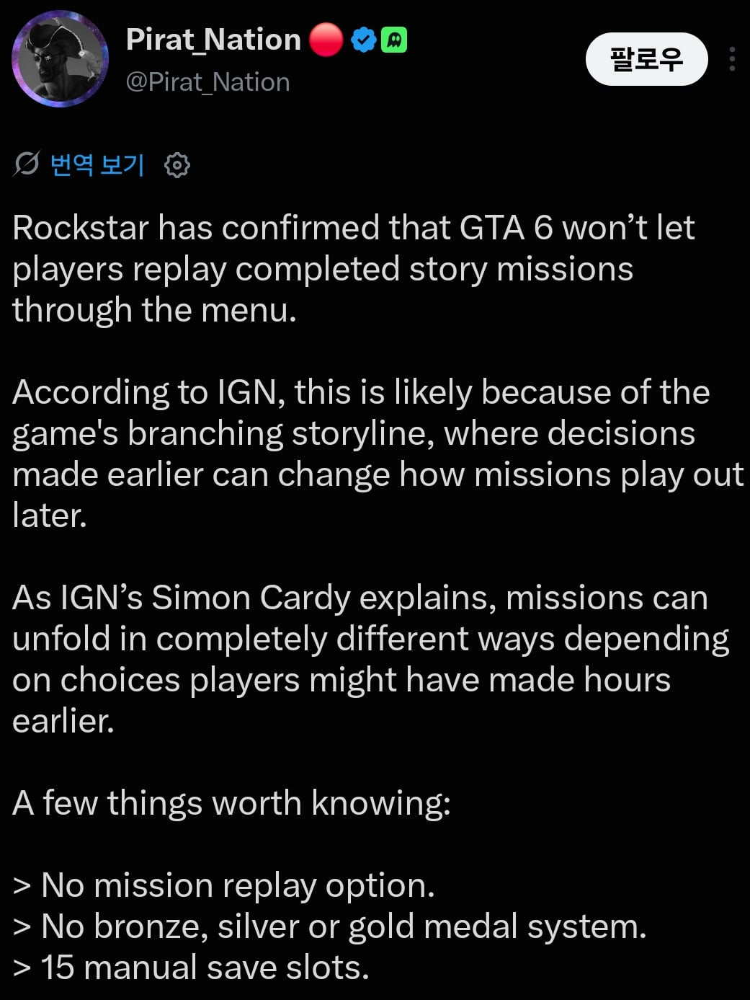

1. 미션 재플레이 옵션 없음.
2. 동·은·금 메달 시스템 없음.
3. 15개의 수동 저장 슬롯.
이 있다네요
트윗 출처
https://x.com/Pirat_Nation/status/2123025602684875013?a=ajMfvt-KpSMtsS63sEo&s=19
ign 기사 내용
https://www.ign.com/articles/gta-6-doesnt-let-you-replay-story-missions-heres-why?utm_source=twitter
분기있는 스토리게임 처음보는것처럼 뭐지